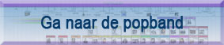

* Druk op F11 voor een optimale weergave van de tijdsbanden *
** Klik op de componisten voor de biografie en de luisterfragmenten **
*** Klik op de muziekhistorische periodes voor meer uitleg en luistertips ***